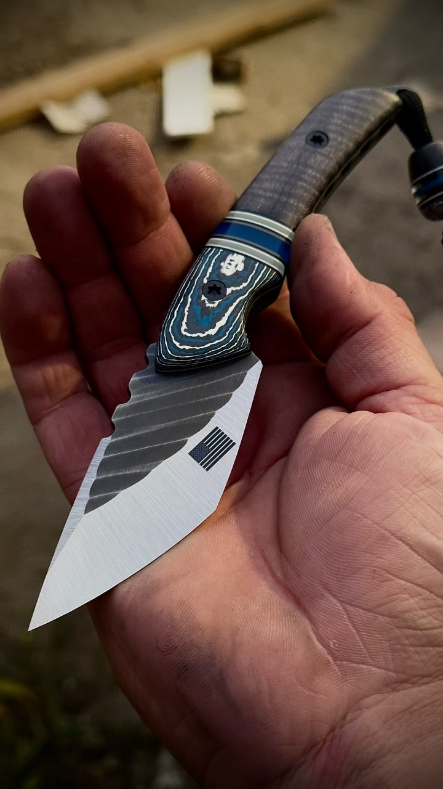
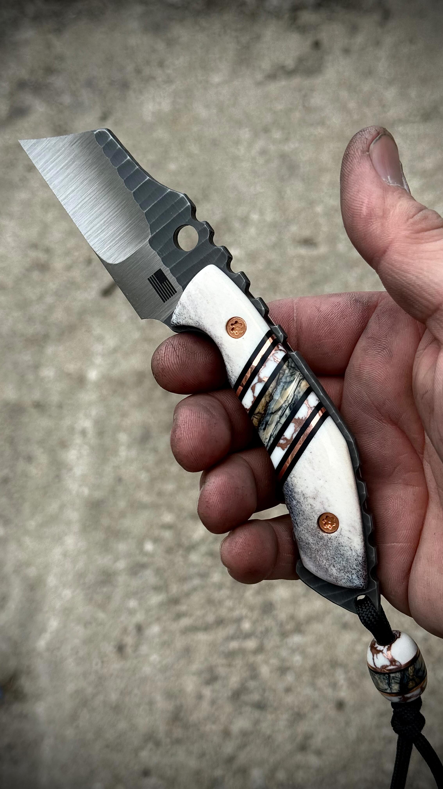
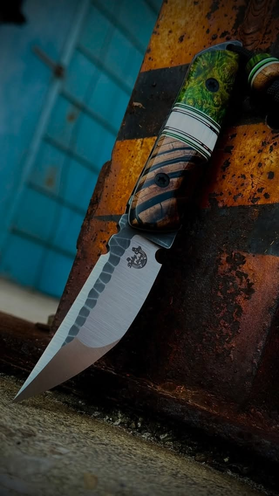

Spur
Model · 1 photo
Carbon fiber and curly maple, translucent blue spacer.

Handmade knives by Derick Duncanson, Louisville, Kentucky. Almost 20 years building custom signs and structural art — now making blades and tools.
“I've always thought it would be cool if I could just direct them to a website where they can scroll through and look at them.” — DerickView the gallery

One model at a time.
His favorite work.
99% of the work is commissions.
Find a model you like — to ask about a commission, message @derbycityblades on Instagram.
Model · 1 photo
Carbon fiber and curly maple, translucent blue spacer.

Model · 1 photo
Purple and amber scales.
3 photos



Photos to come
Built by hand in Louisville, Kentucky.
Most work is commissions. To ask about a commission, message @derbycityblades on Instagram.
Message on Instagram